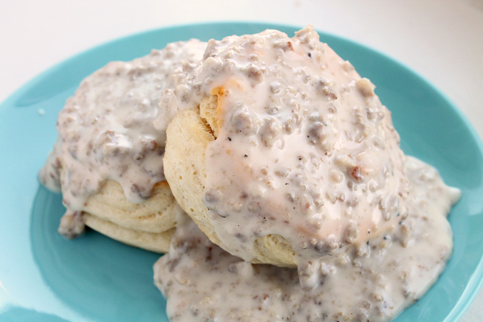

Biscuits & Gravy!

Description
A southern classic! I don't know about you but busicuits and gravy always makes my mouth water!
For me personally, this is a nostalgic dish that never fails to taste delicious! This recipe is my great grandmothers, although
it will never compare to the taste when she used to make it! Today this recipe will walk you through how to make this amazing
southern breakfast staple! Pair it with my Homemade Biscuits and Scrambled Eggs and you will have yourself a perfect homemade breakfast!
Ingredients
- Frozen biscuits (Trust me frozen biscuits will taste wayyy better than canned ones or you can make them homemade which is even better!)
- 5-6 Cups of Whole or Condensed Milk
- 1/2 Cup of All Purpose Flour
- 1IB of Sage Sausage
Steps
- Preheat oven to temperature stated on your package of biscuits
- Follow biscuit instructions and put the biscuits in the oven
- Once you have about 5-10 minutes left on your biscuits heat a shallow pot or deep pan to medium-High heat on your stovetop
- Add your sausage to your pan and cook until browned (You can drain the sausage once cooked if you choose, but I recommend leaving the grease as it adds flavor to the gravy)
- Reduce heat to medium-Low, add 5 cups of milk to your pan
- Slowly add your flour to the milk while stirring. Keep adding flour until mixture is a little thinner than the consistency of pancake batter
- If your mixture seems too thick slowly add a bit more milk until the gravy is around the right consistency. If the gravy is too thin keep adding more flour until you get the correct consistency
- Cook for an additional 2-3 minutes, stirring occassionally
- Remove from heat and let sit for 1-2 minutes to cool
- Serve over your freshly made biscuits! (I also recommend a side of scrambled eggs! I personally mix it all together! YUM!)